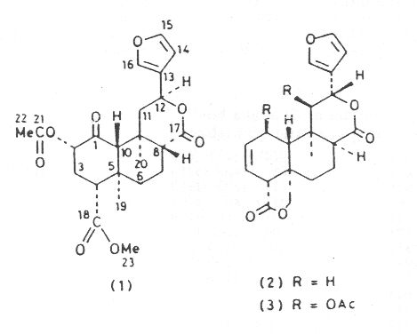
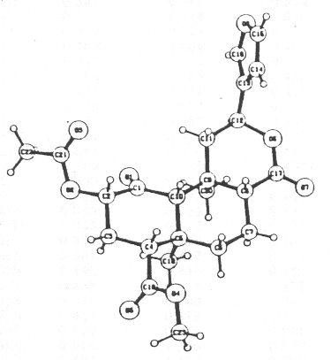

Salvinorin, A New trans-Neoclerodane Diterpene from Salvia divinorum (Labiatae)
By - Alfredo Ortega,* Instituto de Quimica, Universidad Nacional Autonoma de Mexico, Ciudad Universitaria, Mexico 20, D.F., Mexico
John F. Blount and Percy D. Manchand,* Chemical Research Department, Hoffmann-La Roche Inc., Nutley, New Jersey 07110, U.S.A.
(HTML by Arachnophilia)
Journal of the Chemical Society, Perkins Transactions I, 1982, 2505-2508.
Salvinorin, isolated from Salvia divinorum has been shown by spectroscopic and X-ray-crystallographic methods to be a trans-neoclerodane diterpene of structure (1). Crystals of compound (1) are orthorhombic, space group P21P21P21 with a = 6.368 (2), b = 11.338(3), c = 30.7100 (6) Å, and Z = 4. The structure was refined by least-squares to R 0.052 and R' 0.056.
The essential oils produced by certain members of the widespread genus Salvia (Labiatae) are use extensively in the food and cosmetic industries. Examples are Dalmatian sage oil from S. officinalis (used to flavour certain foods) and Clary sage oil from S. Sclarea (used in perfumery).1 S. divinorum ('hojas de la Pastora', possibly identical with "pipiltzintzintli') is a relatively rare plant that is used by the Mazatec Indians of Mexico in their divination rites,2 but no previous chemical studies have been reported for it. However, various bi- and tri-cyclic diterpenes have been isolated from other Salvia species.3 Extraction of the leaves of S. divinorum has now yielded a novel bicyclic diterpene, salvinorin (1), C23H28O8, whose structural elucidation forms the subject of this paper.

Although the i.r. spectrum (CHCl3) of salvinorin (1) showed only one peak in the carbonyl region (nmax 1735 cm-1), the 13C n.m.r. spectrum (CDCl3; d/p.p.m.) revealed carbons due to four carbonyl groups; one of the ketone type (singlet at 202.4) and three of the ester type (singlets at 171.57, 171.15, and 169.94). Other salient features in the 13C n.m.r. spectrum of compound (1) included absorptions due to a b-substituted furan (singlet at 125.25 and doublets at 143.66, 139.46, and 108.41), four methyl carbons (quartets at 51.90, 20.56, 16.36 and 15.19), and two methine carbons bearing oxygen (doublets at 75.03 and 72.00, these are assigned to C-2 and C-12, respectively). There were also absorptions due to three methine carbons a to carbonyl groups (doublets at 63.90, 53.47, and 51.26), four unassigned methylene carbons (triplets at 43.23, 38.08, 30.75 and 18.11), and two quaternary carbons (singlets at 42.06 and 35.41). the 1H n.m.r. spectrum (CDCl3) had absorptions due to two tertiary methyl groups (singlets at dH 1.11 and 1.45), a methyl ester (singlet at 3.74) and the b-substituted furan (1 H-multiplet at 6.38 and 2 H-multiplet at 7.41). Absorption due to the acetate appeared at dH 2.16, that the acetate was a secondary one was evident from the presence of a one proton triplet (dH 5.14, J 10 Hz). A one proton doublet of doublets (dH 5.51 J 12 and 6 Hz) is assigned to the 12-H.
Final proof of the stereoscopic structure of salvinorin (1) was obtained from a single-crystal X-ray analysis using direct methods.4 Details of the X-ray analysis are given in theExperimental section, and listings of final atomic parameters, bond lengths, and torsion angles are given in tables 1-4. An ORTEP stereoscopic drawing of compound (1), as determined from the X-ray analysis is displayed in the Figure. This figure also represents the absolute stereochemistry of salvinorin, which was deduced from the negative c.d. curve (294 nm, e - 5 600 in dioxan) due to the keto group at C-1, in accord with that reported for isofruticolone.5

FIGURE. An ORTEP stereoscopic drawing of Salvinorin (1)
[Arachnid note - not reproduced as stereo drawing].
Salvinorin (1) thus belongs to the neoclerodane class of diterpenes, a group of compounds that has attracted considerable interest because of problems associated with their stereochemistry 6 and because of the diverse biological activities shown by some members (e.g. insect antifeedant, antitumor and antifungal properties).7 Except for differences in the substituents and the stereochemistry at C-8 and C-12, salvinorin (1) is structurally similar to salviarin (2)3 and splendidin (3),8 compounds which were recently isolated from S. splendens by Hanson and his collaborators.
EXPERIMENTAL
The m.p. was determined in a capillary tube. I.r. and n.m.r. spectra were determined in chloroform and deuteriochloroform, respectively. The 1H and 13C n.m.r. were determined at 200 and 50.8 MHz, respectively. The 1H and 13C n.m.r. spectra were determined at 200 and 50.8 MHz, respectively. Chemical shifts are expressed in p.p.m. downfield from tetramethylsilane as internal reference, with coupling constants (J) in Hz. The mass spectrum was recorded at 70 eV, m/z values are given with relative intensities (%) in parentheses. Thin-layer chromatography (t.l.c.) was performed on silica (PF254g Merck) plates and spots were made visible by spraying with 10% phosphomolybdic acid in propan-2-ol followed by heating. Column chromatogaphy was carried out using 'Tonsil' as adsorbent. 'Tonsil' is a commercially available bentonitic earth with the following composition: SiO2 (72.5%), Al2O3 (13%), Fe2O3 (5%), MgO (1.5%), CaO (7.2%), and H2O (8.5%), and has pH 3.
Isolation of Salvinorin (1) - Dried milled leaves (200 g) of Salvia divinorum, collected at Huautla, Oaxaca (Mexico) in November 1980, were extracted with boiling chloroform. Evaporation of the solvent gave a green residue (27 g) which was purified by chromatography on 'Tonsil' (200 g) with chloroform as eluant. Thirteen fractions of 50.0 mL were collected, the sixth and seventh of which contained compound (1) as ascertained by t.l.c. (45% ethyl acetate in hexane as developer, Rf 0.7). Crystallization from methanol yielded salvinorin (1) as colourless crystals, m.p. 238-240°C; [a]D25 -41° (c, 1 in CHCl3); nmax 1735 cm-1; dH 1.11 (3H, s, Me), 1.45 (3H, s, Me), 2.16 (3H, s, COMe), 3.74 (3H, s, CO2Me), 5.14 (1H, t, J 10, 2-H), 5.51 (1H, dd, J 12 and 6, 12-H), 6.38 (1H, m, 14-H), 7.14 (2H, m, 15- and 16-H); dC 15.19 (q, C-19), 16.36 (q, C-20), 18.11 (t, CH2), 20.56 (q, C-22), 30.75 (t, CH2), 35.41 (s, C-9), 38.08 (t, C-11), 42.06 (s, C-5), 43.23 (t, CH2), 51.26 (d, C-8), 51.90 (q, c-23), 53.47 (d, c-4), 63.90 (d, C-10), 72 (d, C-12), 75.03 (d, C-2), 108.41 (d, C-14), 125.25 (s, C-13), 139.46 (d, C-16), 143.66 (d, C-15), 169.94 (s, C-21), 171.15 (s, C-15), !71.57 (s, C-17), and 202.04 (s, C-1) (assignments are tentative and based on chemical shifts and off-resonance decoupled spectra); m/z 432 (M+, 20), 404 (15), 359 (5), 318 (20), 273 (30), and 94 (100) (Found: C, 63.5; H, 6.3; C23H28O8 requires C, 63.88; H, 6.53%).
X-Ray Crystallographic analysis of Salvinorin (1) - C23H28O8. M = 432.47. Orthorhombic, space group P212121.. a = 6.368(2), b = 11.338(3), c = 30.710(6) Å. Z = 4, Dc = 1.295 g cm-3, m(Cu-K2) = 8.3 cm-1. The intensity data, uncorrected for absorption, were measured on a fully automated Hilger-Watts diffractometer (Ni-filtered Cu-K2 radiation, q-2q scans; pulse-height discrimination) using a crystal of dimensions ca. 0.08 x 0.20 x 0.6 mm grown from methanol. Of 1763 independent reflections for q < 57°, 1518 were considered to be observed [I > 2.5s(I)]. The structure and relative stereochemistry of compound (1) were solved by a multiple-solution procedure4 and refined by full matrix least squares. In the final refinement the non-hydrogen atoms were refined anisotropically, except for the oxygen atom of a molecue of water, which was refined isotropically. Tho occupancy factor of the oxygen molecule of the water molecule was included in the refinement and was found to be 0.32(1). The hydrogen atoms were included in the structure-factor calculations, but their parameters were not refined. The final discrepancy indices were R 0.052, R' 0.056 for the 1518 observed reflections. The final difference map had no peaks greater than 0.2 e Å-3. Listings of final atomic parameters, bond lengths, bond angles and torsion angles are given in Tables 1-4. Observed and calculated structure factors and atomic thermal parameters are given in Supplementary Publication No. SUP 23371 (8 pp).
[Arachnid note - Tables 1 - 4. X-ray crystallographic and ordering data - not reproduced.]
Table 1 - Final atomic parameters for salvinorin (1)…
Table 2 - Bond lengths (Å) in salvinorin (1)…
Table 3 - Bond angles (º) in salvinorin (1)…
Table 4 - Torsion angles (º) in salvinorin (1)…
We thank Mr. Louis Todaro and Ms. Ann-Marie Chiu for their assistance with their assistance with the X-ray crystallographic work.
[2/375 Received 3rd March, 1982]
REFERENCES
1 A.F. Halim and R.P. Collins, J. Agric. Food Chem., 1975, 23, 506; W.H. Lewis and M.P.F. Elvin-Lewis, 'Medical Botany," Wiley, New York, 1977, p. 5.
2J.M. Watt in 'Plants in the Development of Mpdern Medicine,' ed. T. Swain, Harvard University Press, 1972, p. 67.
3G.Savona, M.P. Paternostro, F. Piozzi, J.R. Hanson, P.B. Hitchcock, and and S.A. Thomas. J. Chem. Soc., Perkin Trans. I, 1981, 1186, and references cited.
4G. Germain, P. Main, and M.M. Woolfson, Acta Crystallogr., Sect. A, 1971, 27, 368.
5M. Martinez-Ripoli, J. Fayos, B. Rodriguez, M. Paternostro, and J.R. Hanson, J. Chem. Soc., Perkin Trans. I, 1981, 1186.
6D. Rogers, G.G. Unal, D.J. Williams, S.V. Ley, G.A. Sim, B.S. John, and K. Ravandranath, J. Chem. Soc., Chem. Commun., 1979, 97. G. Trivedi, H. Komura, I. Kubo, K. Nakanishi, and B.S. Joshi, ibid., 1979, 885. I. Kubo, M. Kido, and Y. Fukuyama, ibid., 1980, 897. F. Piozzi, Heterocycles, 1981, 15, 1489.
7For reviews see J.R. Hanson in 'Terpenois and Steroids,' Specialist Periodical Reports, The Chemical Society, London, 1981, vol. 10 and preceding volumes.
8G. Savona, M.P. Paternostro, F. Piozzi, and J.R. Hanson, J. Chem. Soc., Perkin Trans. I, 1979, 533.